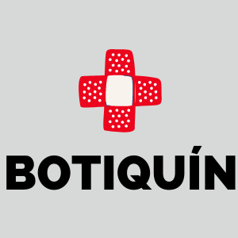

INICIO
MI CUENTA
CURSOS

Introducción
Utilidad
Instrumentación
Instrumentación
El siguiente video muestra la instrumentación, que se debe de tener contemplada cuando hablado de un botiquín de primeros auxilios.
Botiquín de Emergencia
Cuestionario Módulo 3
¿Con qué tipos de elementos se puede desinfectar una herida?
Agua y jabón
Alcohol y Antisépticos
Gel antibacterial y limón.
¿Con qué tipos de elementos podemos tratar heridas pequeñas?
Cintas
Apositos adhesivos
Torniquetes
¿De los siguientes elementos cual es el más recomendable para evitar hacer contacto con la sangre?
Guantes Nitrilo
Guantes de latex
Guantes de Vinilo
Este elemento es indispensable cortar gasas, apositos y compresas:
Bisturí
Tijeras
Cutter
Instrumento que nos ayuda a detener hemorragias:
Gasa.
Apositos Hemostático.
Cintas de algodón.